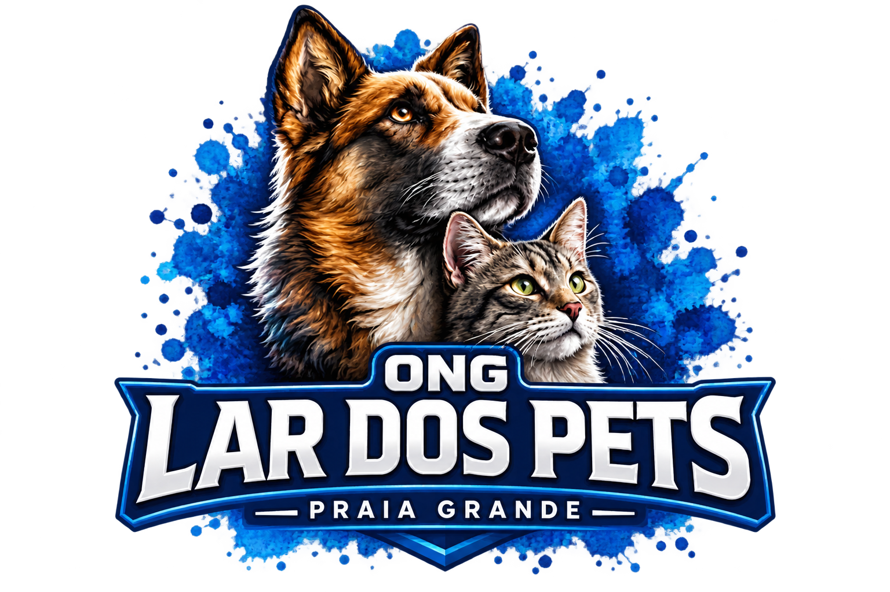

A ONG Lar dos Pets atua no resgate e cuidado de animais em situação de abandono, maus-tratos e emergência. Hoje, oferecemos abrigo, alimentação e atendimento veterinário, contando com o apoio da comunidade para manter esse trabalho e transformar histórias de sofrimento em novas oportunidades.
Volta ao topo